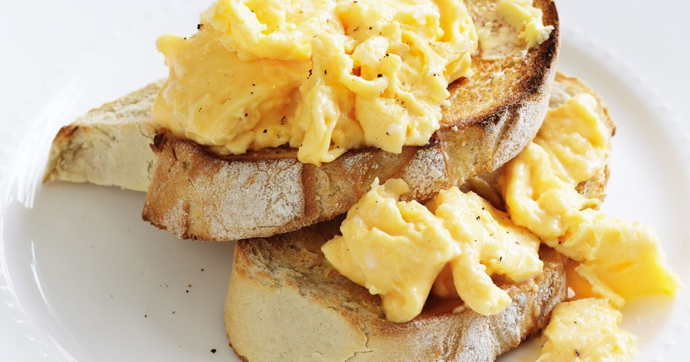

Scrambled Eggs Recipe

Description
Scrambled eggs are one of the little luxuries of everyday life. When I make them, I savor every bite. They’re soft and creamy, rich and flavorful, and they just so happen to cook in under 5 minutes. Seriously, how amazing is that?
If you poke around the internet in search of the best scrambled eggs recipe, you’ll find a million sites claiming to have it. Don’t be fooled – when it comes to scrambled eggs, “best” is a matter of personal taste. You can load them up with butter or sour cream, or just keep them simple like me.
Ingredients
- Eggs
- Milk, plant milk, or water
- Extra Virgin Olive Oil or butter
- Salt
- Pepper
Steps
- First, beat the eggs. Place them in a medium bowl, and whisk until the yolk and whites are thoroughly combined.
- Add the milk or water, and whisk again! The beaten eggs should be an even yellow color, with no translucent spots or streaks.
- Next, gently preheat the pan. Brush a small nonstick skillet with olive oil, or melt a little butter inside it. Warm the skillet over medium heat.
- Finally, cook. Pour in the egg mixture, and let it cook for a few seconds, undisturbed. Then, pull a rubber spatula across the bottom of the pan to form large, soft curds of scrambled eggs.
- Continue cooking over medium-low heat, folding and stirring the eggs every few seconds. As you work, make sure to scrape your spatula along the bottom and sides of the pan to continue to form curds and to prevent any part of the eggs from drying out.
- For a soft, creamy scramble, stop when the eggs are mostly set, but a little liquid egg remains. Remove the pan from the heat, and season to taste with salt and pepper.
- That’s it! The whole process will be over in under 5 minutes.